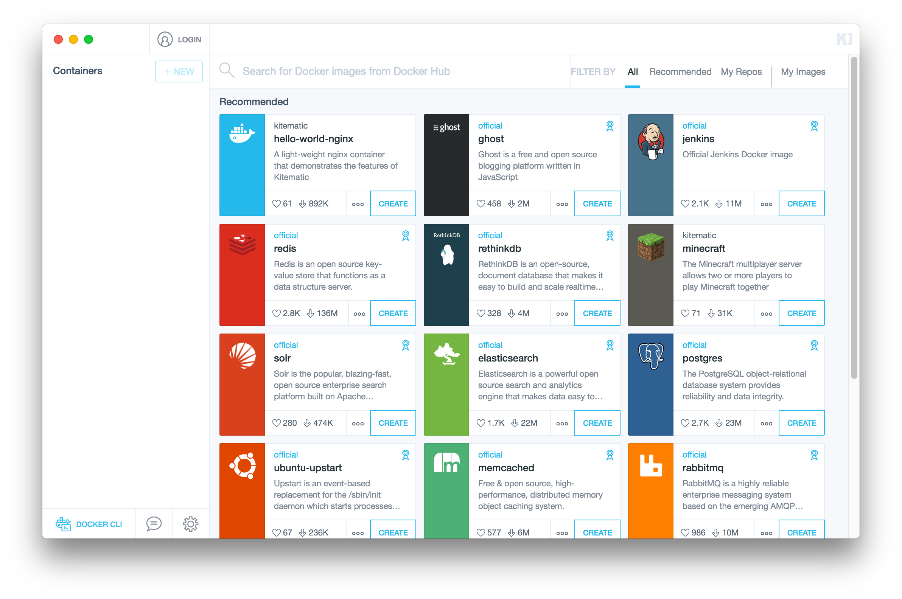

name: cover # Introduction to Docker Matthias Jahn<br> Peerigon GmbH<br> [@matthaias](https://twitter.com/matthaias) <img id="slide-cover-img" src="./assets/peerigon-logo.png" width="400"> --- class: slides-centered, theme-whiskey # Agenda 1. What is Docker and why we need it 2. VM vs. Docker 3. Docker tools 4. Creating a container 6. Ecosystem 7. Alternatives 7. Demo --- class: slides-centered, theme-whiskey ### What is Docker? .slides-columns.slides-content[ .col[ <img src="./assets/large_v-trans.png" width="300"> ] .col[ > Docker containers wrap a piece of software in a complete filesystem that contains everything needed to run: code, runtime, system tools, system libraries – anything that can be installed on a server. This guarantees that the software will always run the same, regardless of its environment. ] ] .slides-quote-ref[https://www.docker.com/what-docker] --- class: slides-centered, theme-whiskey ### Images * Read-only template for creating a container * Example: A image contains an Ubuntu operating system and a node.js app * Images can be downloaded or built from scratch * An image can be based on another image * Building an image is done via a `Dockerfile` or commiting a state of a running container * An image consists of one ore more layers <img src="./assets/layer.png" width="300"> .slides-quote-ref[https:docker.com] --- class: slides-centered, theme-whiskey #### Containers * A runnable instance of a Docker image * A container can be sarted, stopped, moved or deleted * While starting the container it is possible to add metadata like networking or env variables * Each container is an isolated and secure app platform * A container can get access to another container, persistent storage or databases --- class: slides-centered, theme-whiskey ### What is a container? <img src="./assets/Docker-linux-interfaces.svg" width="400"> .slides-quote-ref[https://en.wikipedia.org/wiki/Docker_(software)] --- class: slides-centered, theme-whiskey ### Docker architecture <img src="./assets/architecture.svg" width="600"> .slides-quote-ref[https://docs.docker.com/engine/understanding-docker/] --- class: slides-centered, theme-whiskey ### Why do we need something new? .slides-columns.slides-content[ .col[ <div style="text-align: center; font-weight: bold">Complex application stack</div> * Static Page * Web Frontend * Workers * Database * Queue * Service X * ... ] .col[ <div style="text-align: center; font-weight: bold">Platforms</div> * Developer machine * CI * Stage * Prod * Public Cloud * Private Cloud * ... ] ] <!----- class: slides-centered, theme-whiskey ### Docker for * fast, consistent delivery of applications * responsive deployment and scaling * running more workloads on the same server--> --- class: slides-centered, theme-whiskey ### Why should developers care? * A portable runtime environment for the application * No missing dependencies * Instant developer environment * No constraints to languages or tools * Testing with different environments --- class: slides-centered, theme-whiskey ### Separation of concerns .slides-columns.slides-content[ .col[ <div style="text-align: center; font-weight: bold">Developer</div> The developer cares about the inside of the container: * Code * Libs * Package manager * Apps * Data ] .col[ <div style="text-align: center; font-weight: bold">Ops</div> The ops team cares about the outside of the container: * Logging * Remote access * Monitoring * Network => All apps start the same way ] ] --- layout: true class: slides-centered, theme-whiskey --- ### VM vs. Docker .slides-columns.slides-content[ .col[ <div style="text-align: center; font-weight: bold">Similarities</div> * Isolation * Easy to move ] .col[ <div style="text-align: center; font-weight: bold">Differences</div> * VM has own OS and Kernel * VM guest can be another OS than host * Docker offers copy-on-write * Docker starts with initial command * Container is "version controlled" (image layers) ] ] --- ### VM vs. Docker .slides-columns.slides-content[ .col[ <img src="./assets/WhatIsDocker_2_VMs_0-2_2.png" width="400"> ] .col[ <img src="./assets/WhatIsDocker_3_Containers_2_0.png" width="400"> ] ] .slides-quote-ref[https://www.docker.com/what-docker] --- ### Docker tools * Docker Engine * Docker Compose * Docker Registry * Docker Machine * Docker Swarm * Kitematic --- ### Docker Engine <img src="./assets/engine-components-flow.png" width="500"> .slides-quote-ref[https://docs.docker.com/engine/understanding-docker/] --- ### Docker Compose .slides-columns.slides-content[ .col[ * A tool for multi-container applications on a single host * Reusing volume data * Recrating only changed containers * Environment variables can be passed to a container * Use cases: * Development * Testing * Single host deployments ] .col[ <img src="./assets/Compose.png" width="300"> .slides-quote-ref[https://github.com/docker/docker.github.io/blob/master/images/Compose.png] ] ] --- <div style="text-align: center; color: grey">docker-compose.yml</div> ```yml version: '2' services: db: image: mysql:5.7 volumes: - "./.data/db:/var/lib/mysql" environment: MYSQL_USER: wordpress MYSQL_PASSWORD: wordpress [...] wordpress: depends_on: - db image: wordpress:latest links: - db ports: - "8000:80" environment: WORDPRESS_DB_HOST: db:3306 WORDPRESS_DB_PASSWORD: wordpress ``` --- ### Docker Registry .slides-columns.slides-content[ .col[ * Storage/Repo for Docker images * Offers storage drivers like S3, Azure... * Docker service: [hub.docker.com](https://hub.docker.com) * Use Cases: * CI/CD Process * Distribute images easily in an own infrastructure ] .col[ <img src="./assets/registry.png" width="150"> .slides-quote-ref[https://github.com/docker/distribution] ] ] --- ### Docker Machine .slides-columns.slides-content[ .col[ Docker machine creates Docker hosts and clusters on: * Desktops * Cloud providers * Own datacenter ] .col[ <img src="./assets/MACHINE.png" width="150"> .slides-quote-ref[https://www.docker.com] ] ] --- ### Docker Swarm .slides-columns.slides-content[ .col[ * Included in the newest engine (used to be standalone) * Native cluser for Docker engine * Scaling, number of running instances of a task can be specified * Multi-host overlay networking * Service discovery * Load balancing * Rolling updates ] .col[ <div style="text-align: center; font-weight: bold"> <img src="./assets/swarm.png" width="350"> .slides-quote-ref[https://www.docker.com] </div> ] ] --- ### Kitematic .slides-columns.slides-content[ .col[ * Graphical docker engine installer * Docker Hub integration * Allows to set and change: * Port mapping * Environment variables * Volumes ] .col[ <!--<div style="text-align: center; font-weight: bold"> -->  <!--</div>--> ] ] --- ### Building a image with a Dockerfile <div style="text-align: center; color: grey">Dockerfile</div> ```Dockerfile FROM node:6.5 WORKDIR /code/ COPY . . RUN npm install --silent CMD ["npm", "start"] ``` --- ### Ecosystem .slides-columns.slides-content[ .col[ #### Cloud services * Docker cloud * Amazon Web Sevices * Google Cloud Platform * Microsoft Azure * ... ] .col[ #### Orchestration * Swarm * Kubernetes * Nomad * Rancher * DC/OS * ... ] .col[ #### Operating Systems * Linux with a 2.6.32+ kernel * CoreOS * Project Atomic * RancherOS * ... ] ] --- ### Alternatives * Rkt * LXC * LXD --- ### Demo --- # Thanks!